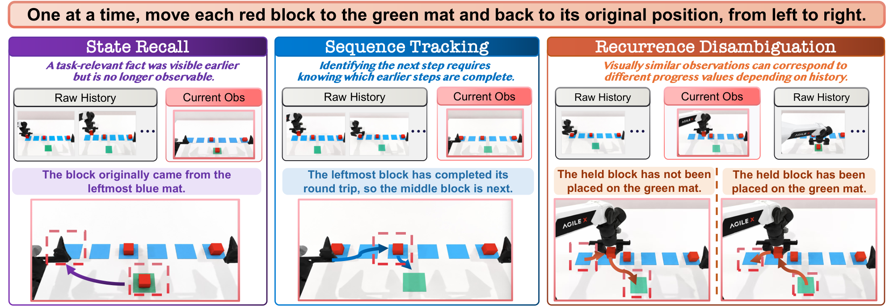
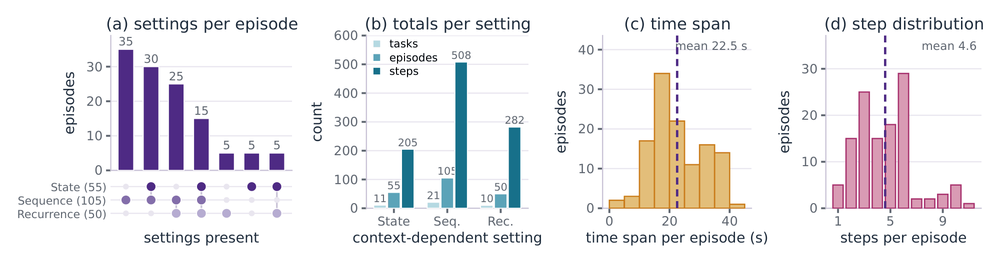
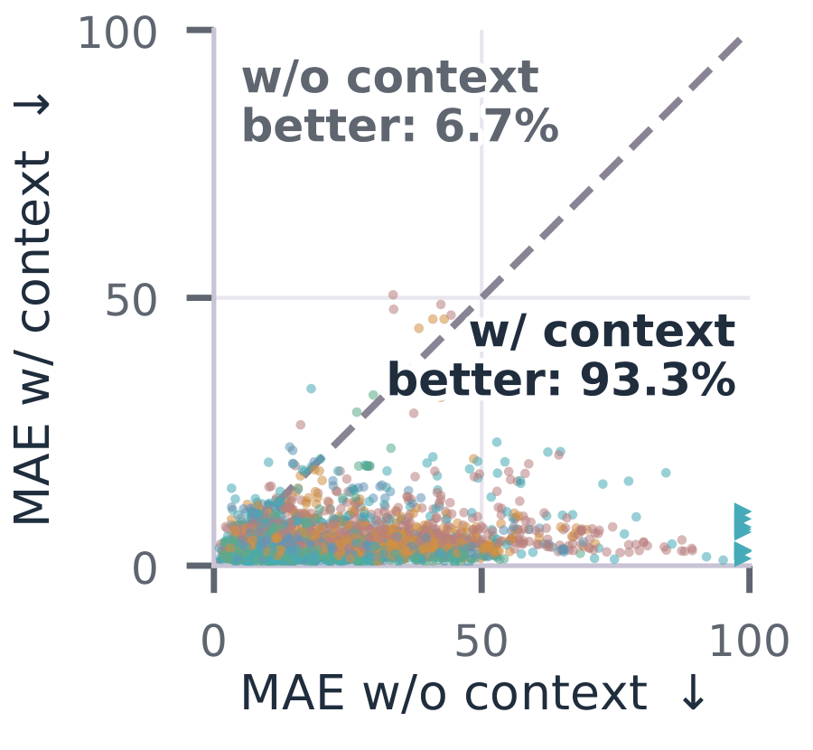
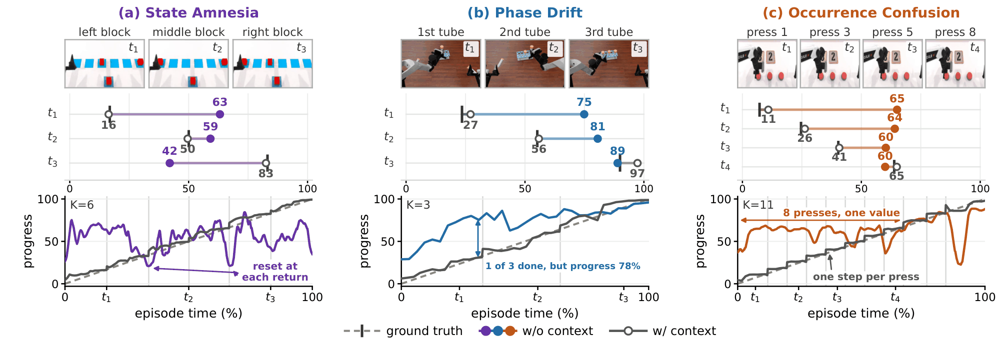
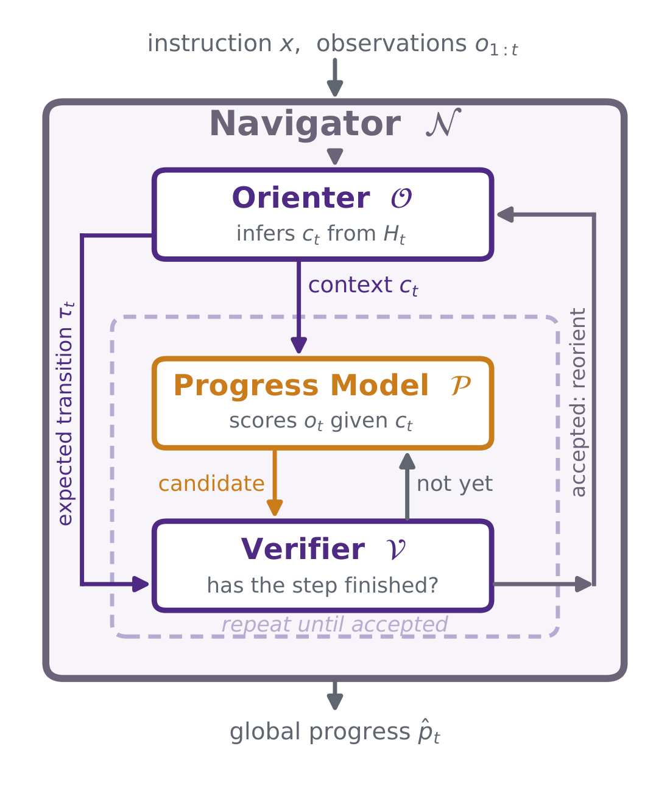
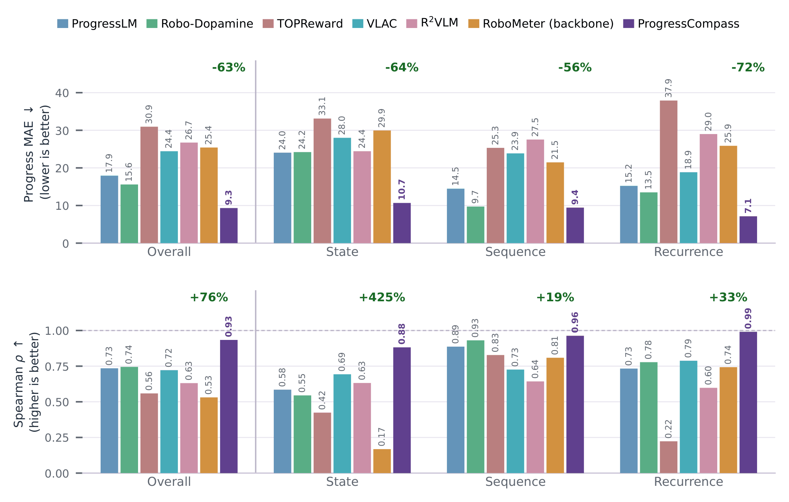
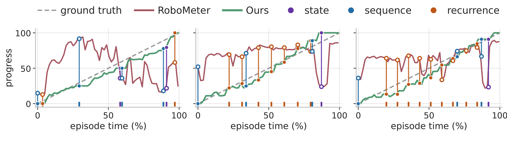
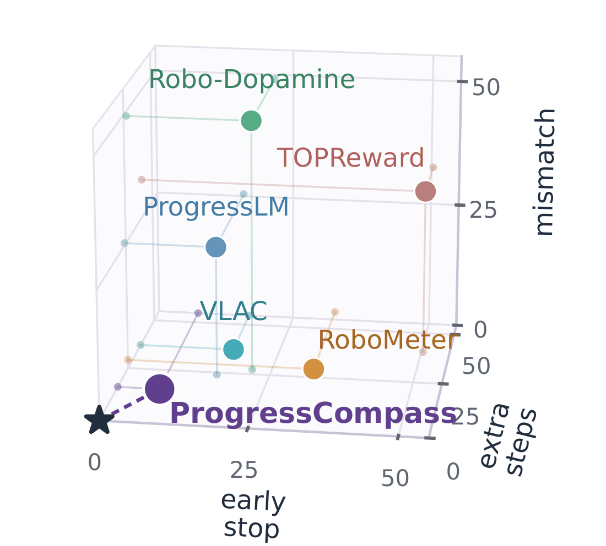
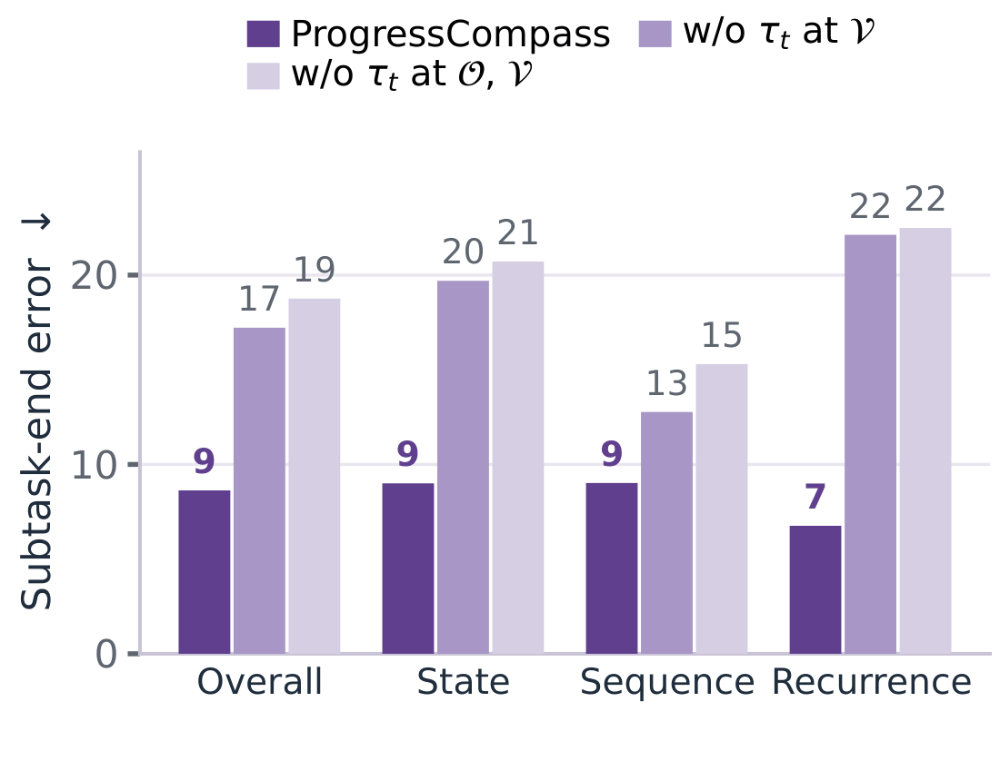

Video Overview

Abstract. Embodied agents now take on ever longer tasks. For long tasks, knowing only whether a task finally succeeds or fails says little; the steps along the way matter. Progress Reward Models (PRMs) score how far a task has come at every step, and serve as dense rewards, verifiers and monitors. Yet in long tasks the current frame alone often cannot tell how far the task has come, because progress depends on what happened before. We call this problem context-dependent progress estimation. Existing benchmarks on progress estimation mostly focus on short tasks whose progress can be read from the current observation, and whether PRMs can estimate progress when context is needed remains underexplored. We therefore build ContextProgress-Bench, with 24 manipulation tasks for 120 episodes. The benchmark covers three settings: (i) State Recall, where information needed for progress appeared earlier but is not in the current frame; (ii) Sequence Tracking, where steps follow a fixed order, so progress requires knowing which steps are done and which comes next; and (iii) Recurrence Disambiguation, where look-alike frames sit at very different progress. We then run a paired diagnosis: each PRM keeps the same input format in both runs, and in one run its instruction integrates the right context. Even PRMs that read the entire history still get lost in estimating progress. With the right context, however, the same five models cut their progress error by 77–82%. Embodied PRMs are thus not incapable of progress estimation, but lost without the right context. We therefore propose ProgressCompass, an autonomous agentic loop that reorients an existing PRM and uses current general-purpose VLMs to supply the context the PRM needs. Wrapped in the loop, the same frozen PRM cuts its progress error by 63% and raises its rank agreement by 76%. With such a compass, PRMs estimate progress far better on longer, more complex tasks.
Context-Dependent Progress Estimation
A PRM that reads only the current observation predicts f(ot | x) for an instruction x. In context-dependent tasks, this cannot work: the progress pt depends on information that ot does not carry. We call this missing piece the context ct. Handing the model the whole history is not the same as giving it the context: the history is a raw record of what was observed, while the context is one specific fact that the record establishes, and which fact matters depends on the instruction and the current frame.
State Recall
What happened before? A state change has happened and left the frame, such as which mat a block came from.Sequence Tracking
Where are we in the sequence? Steps follow a fixed order, and the frame does not show which of them are already done.Recurrence Disambiguation
Which occurrence is this? Repeated actions produce look-alike frames at very different progress.ContextProgress-Bench
We build ContextProgress-Bench from robot-manipulation trajectories in RMBench, RoboDojo and LIBERO-Mem. We select by hand the tasks whose progress is context-dependent, sample five episodes of each task at random, and annotate by hand the subtask intervals and the context each interval requires. The benchmark is released on Hugging Face, with every full video, subtask clip, instruction and boundary.

Where Progress Reward Models Get Lost
We evaluate five PRMs: ProgressLM, Robo-Dopamine, RoboMeter, TOPReward and VLAC. For each model, both runs use the same input format: without context gives the episode instruction, and with context replaces it with the instruction of the active subtask, which integrates the annotated context. The two runs are paired on all 552 annotated subtask intervals, so they differ in the context alone.
| Model | w/o context | w/ context: oracle | w/ context: self-chained | |||
|---|---|---|---|---|---|---|
| MAE ↓ | ρ ↑ | MAE ↓ | ρ ↑ | MAE ↓ | ρ ↑ | |
| ProgressLM | 17.95 | 0.74 | 4.18−77% | 0.99+35% | 16.70−7% | 0.99+34% |
| Robo-Dopamine | 15.59 | 0.74 | 3.43−78% | 0.98+31% | 4.66−70% | 0.97+31% |
| RoboMeter | 25.42 | 0.53 | 4.91−81% | 0.93+75% | 11.39−55% | 0.92+74% |
| TOPReward | 30.95 | 0.56 | 6.70−78% | 0.90+62% | 9.42−70% | 0.89+59% |
| VLAC | 24.43 | 0.72 | 4.50−82% | 0.97+35% | 17.13−30% | 0.94+30% |
Without context, every PRM is far from the true progress, with MAE between 15.6 and 31.0. Models that read or retrieve from the entire history still get lost. With the right context, every PRM cuts its error by 77–82%, and the gain holds on 93.3% of paired intervals rather than on a few easy episodes.
Not blind, but lost.


ProgressCompass: Reorienting Progress Reward Models
A PRM scores a step well once it knows which step is underway, but it cannot work out that step from the history. Vision-Language Models are poorly calibrated estimators of progress, but they are good at understanding a task, breaking it into steps and providing context. Each does well what the other does poorly, and we design an agentic loop around this split. The PRM stays frozen and nothing is trained.

Reads the current frame, states the current step and the expected transition.
Scores progress within the current step.
Checks the frames against the expected transition: is the step really done?
Runs the loop and carries the verified plan from step to step.
Results
Overall performance
Wrapping the frozen RoboMeter-4B in ProgressCompass more than halves its progress error, from 25.4 to 9.3, and lifts its rank agreement from 0.53 to 0.93. No weight changes and the inputs are the same, so the whole gain comes from the context. It is also the best method on every context form, ahead of every frozen PRM and of R2VLM, and recovers 78% of the deficit that oracle context would close.


When instruction and execution do not match
We build 15 held-out negatives by breaking the correspondence between an instruction and its execution in three directions, each with its own correct behaviour.
Early stop cuts the video short: ProgressCompass deviates by 7.3, against 50.3 for TOPReward and 32.7 for RoboMeter. Extra steps deletes steps from the instruction: it deviates by 15.8 against 24.0 to 40.2, and alone reaches 100. Mismatch substitutes an unrelated instruction: ProgressCompass never exceeds zero.

What the expected transition buys
Removing the expected transition at the Verifier doubles the error at the end of each subtask, from 8.6 to 17.2, and removing it at the Orienter as well raises it to 18.8. The order holds on every context form. The Orienter proposes the same number of steps in all runs; what changes is verification, not planning.

Parallelizing the loop
The loop is sequential within an episode, but episodes share nothing. We run up to five episodes at once, and a dependency-aware scheduler sends each episode's next ready call to the model it needs, so that no component within the loop sits idle. Time per episode falls from 114.7 s to 39.5 s (−65.6%), with MAE and ρ unchanged within paired bootstrap intervals.
Conclusion
We formulate context-dependent progress estimation and build ContextProgress-Bench to isolate its three settings. A paired diagnosis shows that current PRMs are not blind but lost: without the right context they stay far from the true progress, even when they read the whole history, and each cuts its error by 77% to 82% once the context is given. ProgressCompass supplies that context to a frozen PRM with general-purpose VLMs, without annotation or training. It more than halves the error of its backbone and stays robust when the execution does less than asked, more than asked, or something unrelated.
BibTeX
@article{zhang2026progresscompass,
title = {ProgressCompass: Embodied Progress Reward Models Are Lost Without the Right Context},
author = {Zhang, Jianshu and Wu, Keliang and Qian, Chengxuan and Yang, Xiyuan and Zhang, Ce
and Tian, Ariel and Liu, Anbang and Lu, Haoran and Liu, Han},
journal = {arXiv preprint},
year = {2026}
}